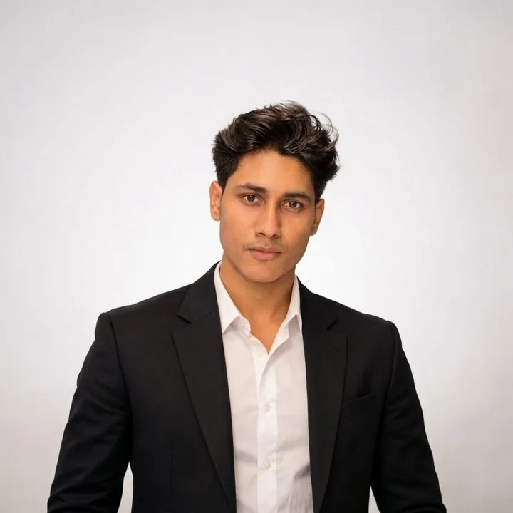
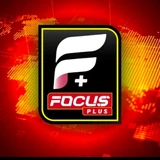
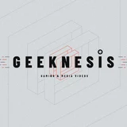
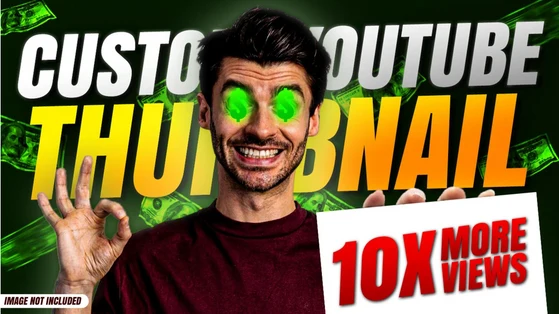
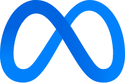
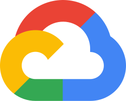

Open the screenshot
Every result sits next to the YouTube Studio screenshot it came from, with the period and the metric named.
See the Focus Plus proofAvailable now · Full-time remote · Open to work globally
Aditya Knox
Also: Performance Marketing Manager (Meta Ads, Google Ads, ROAS)
I grow YouTube channels organically, with $0 spent on ads: 112.5M views in 16 months on one channel, views +295% and revenue +113% on a 522K-subscriber channel, and 4.8X ROAS on paid campaigns. Across seven years and all social platforms: 10B+ lifetime views and 100B+ impressions for 30+ brands and channels.

Results board
Tiles with a green check link straight to the YouTube Studio screenshots they come from. Last reviewed 15 November 2026.
Check before you trust
You should not have to take my word for it. Here is how to check the numbers yourself.
Every result sits next to the YouTube Studio screenshot it came from, with the period and the metric named.
See the Focus Plus proofCTR, AVD and RPM are defined, and every derived value is labelled, so you can recalculate it from the source.
See the metric definitionsFind me on LinkedIn, YouTube and Instagram, and email me with any question.
Open LinkedInRevenue figures are YouTube's estimated values, not verified payouts. Single-day readings are labelled as such. Last reviewed 15 November 2026.
Channels I've grown
Each channel below is public on YouTube. Follow the link to see the channel for yourself.



Role fit
Owns the channel growth system end to end: audits, packaging, retention and revenue.
Paid acquisition tied to revenue, not impressions.
Where I work
Client work across the USA, Canada, India, Dublin and Europe, with flexible overlap for US and European hours. Open to full-time remote roles and agency retainers in any country.
Client work across the USA. Works US Eastern business hours, so there is direct overlap with US teams.
Client work across Canada, with overlap during US Eastern business hours.
Client work across India. Time zone: IST (UTC+5:30).
Client work in Dublin, with flexible overlap for Irish business hours.
Client work across Europe, with flexible US and European overlap.
Not on the list? The answer is still yes: Aditya Knox is open to work with companies in any country.
Organic growth engine · $0 ad spend
Anyone can buy views. The harder skill is earning them. The channel results on this page were built on $0 of ad spend, which means the audience, the thumbnails and the videos did the work, and the same discipline now makes paid budget go further.
Focus Plus went from 200.9K views in Oct 2023 to 11.98M in June 2024, and 112.5M in total over 16 months. Paid promotion: $0.
See the case studyTSP views rose from 194.8K to 769.5K, with estimated revenue +113%, on a 522K-subscriber channel.
See the before/afterCreative, hooks and audiences are proven in organic data first. Paid budget then amplifies what already works, which is how branded campaigns reached 4.8X ROAS.
See the paid resultsAd spend refers to paid promotion of the YouTube channels shown. The 4.8X ROAS is from separate branded paid campaigns (Meta and Google).
Explore the portfolio
Pick a page. Each one shows the numbers next to the YouTube Studio screenshots they came from.
Focus Plus: 200.9K views in Oct 2023 to 112.5M in 16 months, plus six-channel proof.
Open → 02Verified proofTSP before and after, metric definitions (CTR, AVD, RPM) and the screenshots.
Open → 03AI automation stackSelf-hosted agents and workflows for research, outreach and content.
Open → 04Experience & credentialsRoles, skills, education and certifications.
Open → 05ContactOpen to full-time remote roles as YouTube Growth Specialist or Performance Marketing Manager.
Get in touch →Case studies · Focus Plus · Six channels
Each result sits next to its YouTube Studio screenshots.
Selected work
Case study · Focus Plus YouTube channel, managed with Improx Media
A like-for-like view of one YouTube channel. “Before” is the channel's full history up to 31 December 2023 (about 46 months). “After” is the sum of 16 monthly YouTube Studio reports, January 2024 to April 2025, under Improx Media management.
Hover, tap or tab to any bar for the exact month. Gold bars mark the 2024 peak (Jun 24) and the highest month (Apr 25).
| Month | Views |
|---|---|
| Jan 24 | 0.5M |
| Feb 24 | 0.9M |
| Mar 24 | 1.8M |
| Apr 24 | 5.7M |
| May 24 | 4.4M |
| Jun 24 | 12.0M |
| Jul 24 | 8.5M |
| Aug 24 | 4.8M |
| Sep 24 | 3.8M |
| Oct 24 | 6.3M |
| Nov 24 | 5.0M |
| Dec 24 | 5.0M |
| Jan 25 | 9.9M |
| Feb 25 | 10.6M |
| Mar 25 | 14.3M |
| Apr 25 | 19.0M |
Monthly totals from the YouTube Studio screenshots. May 2025 (1–23 only, 16.8M so far) is left out of the 16-month total.
Figure 1: monthly views, January 2024 to April 2025, summed from monthly YouTube Studio reports. Figure 2 and the stat tiles use the same figures. Source: YouTube Studio channel analytics. Revenue is YouTube's estimated figure, in USD. May 2025 is excluded because the report covers only 1–23 May.
Channel proof · more results
Six YouTube Studio period views from three channels. Each card names its channel and period, and shows the totals exactly as Studio reported them.
Source: YouTube Studio channel analytics screenshots supplied by the channel managers. Estimated revenue is YouTube's figure in USD. Where Studio showed no revenue, the card says so.
Verified proof
Every claim checked against YouTube Studio and the channel growth report. Definitions included, so a reviewer knows how each metric is read.
Verified growth · TSP YouTube channel
Channel totals · lifetime, as of November 2026
Before vs now
up from 3 in the before period
CTR, single-day readings (Aug 3 vs Oct 14, 2025)
Source: TSP Social Performance Report, YouTube Studio analytics for the periods shown. Figures as reported. CTR and 48-hour values are single-point readings, not period averages.
Proof
Screenshots are taken from YouTube Studio and the channel's own growth report. Each caption explains what the metric means. Switch between Before and Now, or tap a screenshot to enlarge it.
Total times videos were played in the window.
Aug 15 – Sep 11, 2025: 194.8K views. YouTube noted 7 uploads, against the usual 10–14.Sep 18 – Oct 15, 2025: 769.5K views, +295% on the earlier window. Subscribers moved from −101 to +102.
Share of viewers who clicked a video after seeing its thumbnail.
Single-day reading, 3 Aug 2025: 4.2%.Single-day reading, 14 Oct 2025: 6.1%. Single days vary, so treat this as a point in time.
Shorts that had no custom thumbnail compared with designed thumbnails.
No custom thumbnail. The report links this to lower click-through.Designed thumbnails with bold text and a clear call to action, which the report credits for better engagement.
Sources: YouTube Studio analytics and the TSP Social Performance Report. Single-day CTR readings are not period averages.
Channel comparison · all channels
Each row names the channel, the exact before and after windows, and the views in each. Only rows marked Complete show a true before-and-after; the others need a before window before they can be used as case studies.
| Channel | Before window | Before views | After window | After views | Change | Status |
|---|---|---|---|---|---|---|
| Focus Plus (managed by Improx Media) | Mar 2020 – Dec 2023 (about 46 months) | 8.0M total | Jan 2024 – Apr 2025 (16 months) | 112.5M total | ~40× average views per month (173.9K → 7.03M) | Complete: before and after |
| TSP channel | 15 Aug – 11 Sep 2025 | 194.8K | 18 Sep – 15 Oct 2025 | 769.5K | +295% (+574.7K views) | Complete: before and after |
| Aditya K Social | Not provided | — | Jan 2022 (1 month): 111,122 views; Feb 2017 – Aug 2024 lifetime: 2,580,202 | — | Not measurable yet | Before window needed |
| KHABAR 2DAY | Not provided (Jan 2023 is inside the after window) | — | Feb 2023 – Jul 2024 (18 months): 19,192,343 views | — | Not measurable yet | Before window needed |
Sources: YouTube Studio channel analytics; TSP Social Performance Report (matched periods). Monthly averages divide the total by the number of months in the window. Figures as reported; not audited.
Metrics · definitions and derived values
Each value is taken from YouTube Studio or derived from it. Derived values are labelled, so every figure can be re-calculated from the source.
CTR (click-through rate): Share of impressions that became a click. TSP: 4.2% (3 Aug 2025) → 6.1% (14 Oct 2025), single-day readings.
AVD (average view duration): Average watch time per view. Derived here as watch hours × 60 ÷ views.
RPM (revenue per mille): Estimated revenue per 1,000 views. Derived as estimated revenue ÷ views × 1,000.
Watch hours: Total hours viewers spent watching, as reported by YouTube Studio.
Net subscribers: Subscribers gained minus subscribers lost in the period.
Estimated revenue: YouTube's estimate in USD. It is not a verified payout.
| Panel | Views | Watch hours | AVD (derived) | RPM (derived) |
|---|---|---|---|---|
| Focus Plus, Jan 2024 | 470,097 | 11.5K | 1:28 | $0.040 |
| Focus Plus, Jun 2024 | 11,977,617 | 473.2K | 2:22 | $0.052 |
| Aditya K Social, Jan 2022 | 111,122 | 1.3K | 0:42 | $0.433 |
| Aditya K Social, Feb 2017 – Aug 2024 | 2,580,202 | 28.3K | 0:39 | $0.148 |
| KHABAR 2DAY, Jan 2023 | 156,667 | 1.6K | 0:37 | not shown |
| KHABAR 2DAY, Feb 2023 – Jul 2024 | 19,192,343 | 222.7K | 0:42 | $0.013 |
Derived: AVD = watch hours × 60 ÷ views. RPM = estimated revenue ÷ views × 1,000. KHABAR 2DAY (Jan 2023) shows no revenue in Studio, so RPM is not shown. CTR is from the TSP report only.
AI automation infrastructure
Not just prompts — a self-hosted, self-designed operations stack that does real agency work around the clock. Designed, deployed and maintained independently.
Experience
Seven years across YouTube growth, paid media and agency leadership.
ISKCON (Global Religious Media Organisation)
Improx Media International (LLC) · USA & Remote
Flipkart
Self-employed · Remote
Capabilities
Credentials
English (advanced; IELTS General Training in progress) · Hindi (fluent)


Logos are trademarks of their respective owners and are shown only to identify the institution or organization that issued each degree or credential. No endorsement is implied.
Quick answers
Short, sourced answers about Aditya Knox's work, results and availability.
Aditya Knox is a remote YouTube Growth Specialist and Performance Marketing Manager with seven years of experience across YouTube growth, paid media and agency leadership. He is Founder & Chief Marketing Officer of Improx Media International (LLC) and Media Manager for the Traveling Sankirtan Party channel at ISKCON.
The Focus Plus channel went from 8.0M views over its first four years (to December 2023) to 112.5M views in 16 months (January 2024 to April 2025), with $0 ad spend. On the TSP channel, views rose from 194.8K to 769.5K (+295%) and estimated revenue rose 113% on a 522K-subscriber channel. All figures come from YouTube Studio.
Across seven years and all social platforms, Aditya Knox has delivered 10B+ lifetime views and 100B+ impressions for 30+ brands and channels.
He has delivered 4.8X ROAS on branded paid campaigns across Meta and Google, and reduced client churn by 35%. The 4.8X ROAS is from separate paid campaigns, not from the $0 ad spend YouTube channel growth.
Yes. Aditya Knox has client work across the USA and Canada and works US Eastern business hours, so he overlaps with US and Canadian teams. He is open to full-time remote roles and agency retainers.
Yes. He is available now for full-time remote roles and agency retainers, and is open to work globally. He works US Eastern business hours with overlap for Canada, India and Dublin, and has client work across the USA, Canada, India, Dublin and Europe.
Both. He is open to full-time remote roles as YouTube Growth Specialist or Performance Marketing Manager, and to agency retainers.
He owns the channel growth system end to end: packaging (thumbnail and title click-through rate), retention (hooks, pacing and average view duration), YouTube SEO (keyword clustering, metadata, playlists), format mix (long-form and Shorts), monetization (RPM, mid-roll placement, brand deals, affiliate) and before/after reporting in YouTube Studio.
He runs a self-hosted agent stack with OpenClaw agents, MCP connectors, n8n and Zapier automations, Claude and Claude Code, ChatGPT, Midjourney and Higgsfield, with vidIQ and Semrush data, plus Apify and Hunter for prospecting. Anything client-facing has human review before it is sent.
Every figure comes from YouTube Studio analytics or campaign reports and appears next to the screenshots it came from, with definitions for CTR, AVD and RPM. Revenue is YouTube's estimated figure in USD, not a verified payout, and derived values are labelled.
English (advanced) and Hindi (fluent).
Email adityaknox@outlook.com, the fastest way to reach him, or use LinkedIn (linkedin.com/in/adityaksocial), YouTube (@AdityakSocial) or Instagram (@adityaksocial).
Let's talk
Open to full-time remote roles as YouTube Growth Specialist or Performance Marketing Manager, and to agency retainers. Email is the fastest way to reach me.